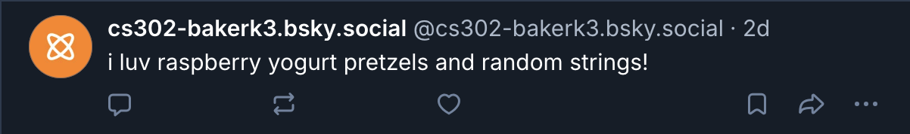
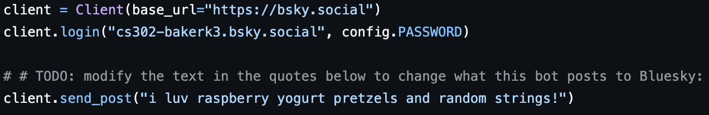
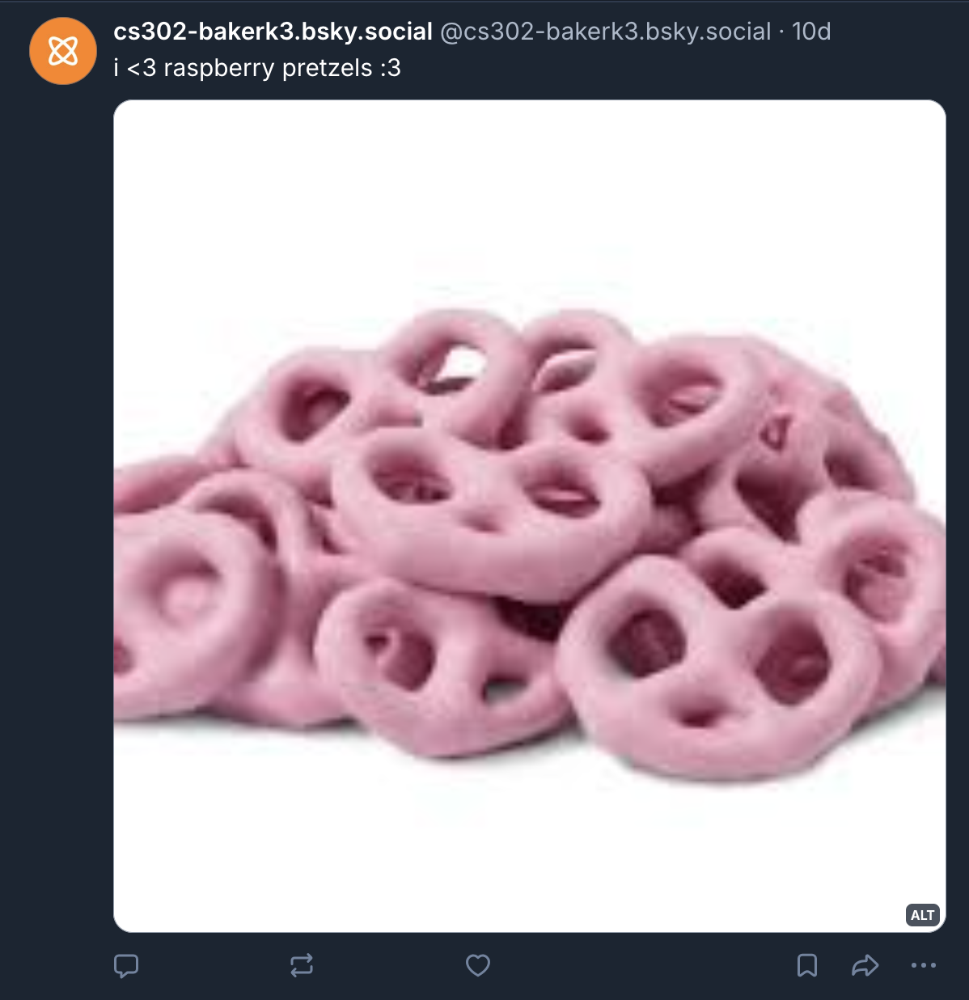
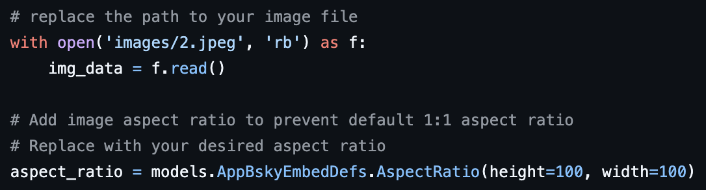
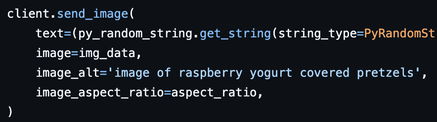
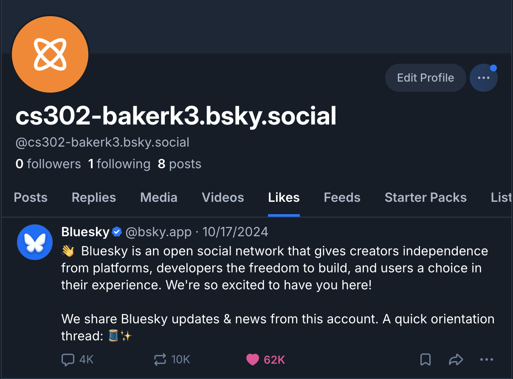
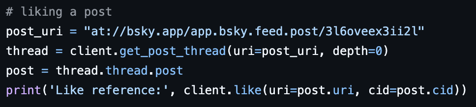

Deliverable 3: Social Media x Ethics
Construction: Bluesky Bot
See on Bluesky ->Text-Only Post


To post a text-only post on Bluesky, I relied on the ATProto API documentation to help create the client and send a post that had a sentence of text. I was eating raspberry yogurt covered pretzels while I was coding my bot, so that's where I got the idea for the content that the bot would post. I like to take inspiration from my environment.
Multimedia Post

'" />

To post a multimedia post on Bluesky, I again referenced the ATProto API documentation to help understand the process of sending an image while maintaining the aspect ratio, and including alt text. I decided to keep up the raspberry yogurt covered pretzel theme and found this image on google.
User Interaction

'" />
Liking another user's post was probably the most challenging part for me. I referenced the API and the other resources that Jean listed in the deliverable, but I also had to spend a good amount of time playing around with the syntax to make sure that I could actually like the post. Figuring out the AT URI was intimidating at first, but after looking at an example in the reading I was able to figure it out and construct it using the information in the post's URL. The print statement with the like reference was helpful for this, since I could see that my AT URI was referencing the correct post.